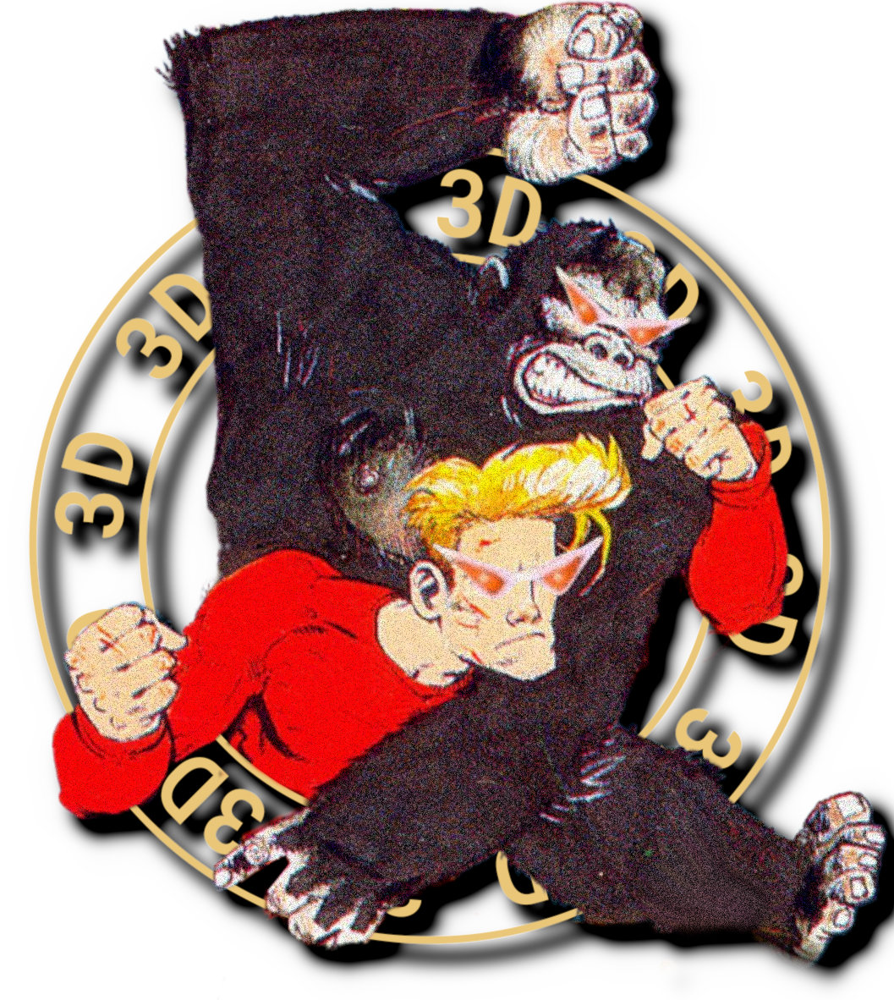

|

A 3D: Doom Daddy Digital ProductionDirected byJim PurvisArtworkCore Lo ArtJim PurvisMusicBarry "Epoch" ToppingSpritesRafael Batista de LimaJim PurvisTexturesJim PurvisLevel designJim PurvisScriptingJim PurvisPlanningJim PurvisWritten byJim PurvisVoice actingMark "Lirlond" McLeodFindlayLaila BerzinsGillian AndersonMargaret ThatcherCastingEd "warnerchild" WarnerGianni MatragranoQuality assuranceRoss "87th" FoubisterMark "Lirlond" McLeodBen "SentientRoomba" AndrewskorenfoonykinsTrailer byRichie MorganWebsite byJim PurvisPeople who helped without knowing itJohn RomeroJohn CarmackSteve BennerDavid BruniGraeme Neil ReidJamie DelanoEiichiro OdaYoichi YamadaYasuhisa YamamuraIkuto YamashitaDavid KushnerSuda 51Tim RogersBrian "Limmy" Limond@spewlieandrewsAdam "Doomkid" PostDavid "DavidXNewton" NewtondecinoMtPain27Eilex DesignReference materials ungratefully provided byThe Conservative and Unionist Party of the United KingdomThe Margaret Thatcher FoundationThe British Broadcasting CorporationDOOM WADs I shamelessly borrowed fromDOOMDOOM 2Final DOOMDOOM 64The Plutonia ExperimentGoing DownSunlustSIGILAlien VendettaArea 51Return to PhobosHell RevealedGoldenEye Doom 2Doom 4 For DoomBTSX Episode 1LunaticRE-Doom 2ValiantA Fistful of Doom2048 Units of /vr/REKKRDoom ZeroHellraiser Doom II: HellboundRowdy Rudy II: POWERTRIPSkeletal RevengeYellowboy WinchesterBFG 2704Special thanksElizabeth StewartRoss "87th" FoubisterOwen "MechaGamezilla" O'DonnellSean "Paperbag" CunninghamMark "Lirlond" McLeodDavid "D" MurrayMarco "JimsMateMarco" VannucciMy mumThis game is dedicated toEVERYONE MARGARET THATCHER HATEDandEVERYONE WHO HATED MARGARET THATCHERall content © respective owners. DOOM® © 1993-2021 id Software LLC, a ZeniMax Media company.
|